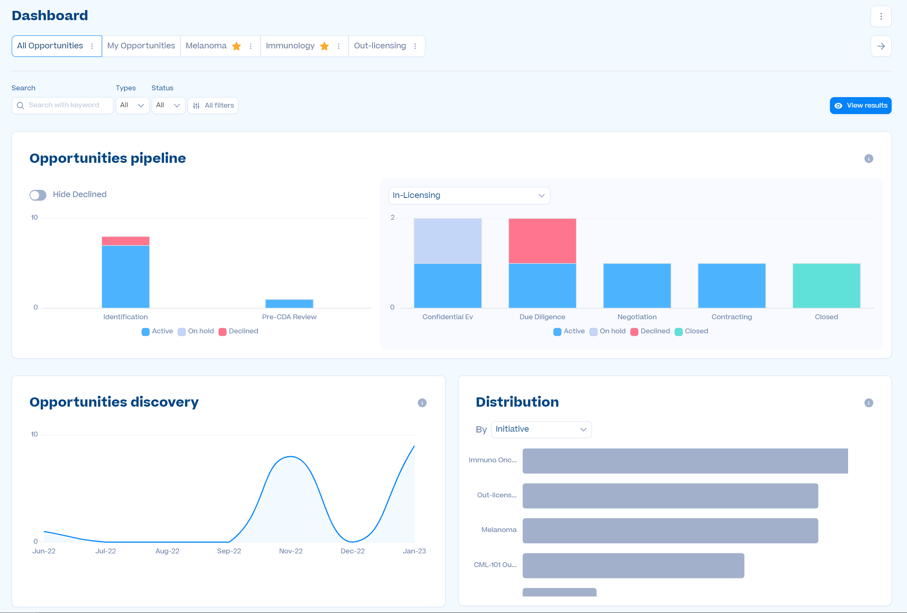

Problem Addressed
Over a year, there are tens of thousands of bio-pharma opportunities created and more than a million events are performed. The partnering CRM is a busy platform and the users need to have a high-level overview of their activity and ability to drill-down to derive insights that will help them be more efficient. An in-app analytics dashboard enables this.
Feature Overview
The Analytics Dashboard allows users to:
- Understand the landscape of all the opportunities and gain high-level overview of opportunities
- Dive deep into their partnering activity to understand possible areas to improve efficiency
- Prioritize opportunities to focus on the ones that important and urgent
Results
- 90% adoption in first month
- Increased platform engagement by 8%